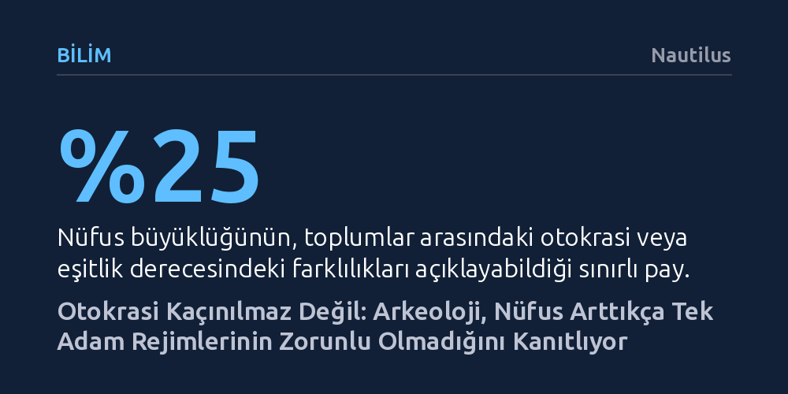

BILIM · Nautilus · 2026-09-07
Küresel ölçekte binden fazla arkeolojik alanı inceleyen yeni araştırmalar, tarıma geçişin ve nüfus artışının sanılanın aksine otokrasiyi ve katı hiyerarşiyi kaçınılmaz kılmadığını gösteriyor. Yönetimlerin demokratik mi yoksa baskıcı mı olacağını belirleyen asıl etken, devlet bütçesinin halktan toplanan vergilere mi yoksa elitlerin tekeline aldığı ticaret ve köle emeğine mi dayandığıdır. Teotihuacan'dan antik Çin'e uzanan kanıtlar, gücün paylaşıldığı kolektif yönetimlerin Batı dünyasına ya da modern döneme özgü bir istisna olmadığını ortaya koyuyor.
Nüfus arttıkça diktatörlüklerin zorunlu hale geldiği yönündeki yaygın inancı yıkarak, eşitlikçi ve katılımcı yönetimlerin insanlık tarihi boyunca her coğrafyada bilinçli ve sürdürülebilir bir kurumsal tercih olduğunu gösterir.

Geleneksel sosyal bilim anlatısı, insanlık tarihini basitleştirici bir çizgide ele alır: İnsanlar başlangıçta küçük avcı-toplayıcı topluluklar halinde kararları ortaklaşa alıyordu; ardından tarımın icadıyla toprağa bağlandılar, kaynak biriktirmeye başladılar ve bu durum kaçınılmaz olarak servet eşitsizliğine ve despotizme yol açtı. Bu yerleşik kabule göre, kalabalıklaşan toplumları yönetmenin tek yolu tepeden inme, baskıcı bir otoriteydi. Katılımcı ya da demokratik yönetimlerin ise antik Yunan ve Roma’daki istisnalar haricinde ancak modern Avrupa Aydınlanması ile yeniden yeşerebildiği varsayılıyordu.
Chicago Field Museum’dan arkeolog Gary Feinman ve çalışma arkadaşlarının PNAS ile Science Advances dergilerinde yayımlanan son araştırmaları bu anlatıyı kökünden sarsıyor. Küresel ölçekte yüzlerce arkeolojik alanı ve onlarca tarihsel bağlamı inceleyen araştırmacılar, nüfus artışının ve tarımın otokrasiyi hiçbir şekilde zorunlu kılmadığını ortaya koyuyor. Veriler, toplumların büyüklüğünün eşitlik veya otokrasi düzeyindeki farklılıkların yalnızca dörtte birini açıklayabildiğini gösteriyor; yani geriye kalan büyük kısım toplumların kurduğu siyasi mekanizmalar ve kurumsal tercihlerle şekilleniyor.
Peki bazı toplumlar tek bir hükümdarın mutlak iradesine boyun eğerken diğerleri nasıl kapsayıcı ve ortaklaşa yönetimler geliştirebildi? Feinman’ın araştırmasına göre bu sorunun kilit yanıtı kaynakların siyasi kurumlara nasıl aktarıldığında gizli. Eğer bir devlet gelirlerini geniş halk kitlelerinden, çiftçilerden ve zanaatkârlardan azar azar toplanan vergilere, yani iç kaynaklara dayandırıyorsa, yöneticilerin despotik bir güç kurması neredeyse imkânsız hale geliyor. Çünkü modern öncesi dünyada hareket kabiliyeti yüksekti; halk ezildiğini veya karşılıksız sömürüldüğünü hissettiğinde göç edip başka yerlere yerleşebiliyordu. Dolayısıyla yönetici kadro, halkı tutabilmek ve üretimi sürdürebilmek için altyapı, geniş toplanma alanları, su kanalları ve güvenlik gibi somut kamu hizmetleri üretmek zorundaydı.
Buna karşılık gelirlerin uzak mesafe ticaret yolları, kıymetli madenler veya köleleştirilmiş kitlelerin emeği gibi dış kaynaklara dayandığı durumlarda bambaşka bir siyasi yapı oluşuyor. Kaynağı elinde tutan elitler, yurttaşların rızasına ya da vergisine ihtiyaç duymuyor. Tekeli korumak için küçük bir silahlı zümreyi finanse etmek yeterli oluyor; böylece yöneticiler halkın taleplerini tamamen görmezden gelebiliyor ve güç dar bir zümrenin elinde yoğunlaşıyor.
Bu kuramsal ayrım arkeolojik kazılarda son derece somut biçimde gözlemlenebiliyor. Örneğin Klasik Maya uygarlığında krallar kendi isimlerini yücelten anıtlar dikmiş, devasa şahsi saraylar inşa etmiş ve öldüklerinde gösterişli anıt mezarlara gömülmüştü. Maya tapınaklarının tepe noktaları yalnızca bir veya iki kişinin sığabileceği kadar dardı; duvar resimlerinde ise krallar esirlerin üzerine basarken ya da tebaadan haraç toplarken tasvir ediliyordu. Çünkü Maya lordlarının gücü, nehir yollarındaki yeşim taşı, kakao ve tütsü gibi lüks ticaret rotalarının denetimine dayanıyordu.
Buna taban tabana zıt bir örnek ise Meksika’daki antik metropol Teotihuacan’dır. Arkeologlar kentin devasa piramitlerinin altını tünellerle kazmalarına rağmen tek bir kral mezarına dahi rastlamadı. Teotihuacan piramitlerinin zirveleri tek bir hükümdar için değil, 10-12 kişilik heyetlerin toplanabileceği geniş platformlar olarak inşa edilmişti. Kentin duvar resimlerinde tek bir kralın yüzü ya da adı yer almıyor; aksine halka tohum ve su dağıtan maskeli görevlilerin kortejleri görülüyor. Dahası, zanaat üretimi saray ambarlarında tekelleşmemiş, mahallelerdeki konutlara yayılmıştı. Bu durum, devasa anıtsal yapıların yalnızca tiranların zoruyla değil, kolektif uzlaşı ve halk yararı gözeten yapılarla da inşa edilebileceğini kanıtlıyor.
Modern algıda bürokrasi sıklıkla hantallık ve yolsuzlukla ilişkilendirilse de, tarihsel veriler güçlü bir idari yapının katılımcı rejimlerin vazgeçilmez bir güvencesi olduğunu gösteriyor. Örneğin antik Çin'de liyakate dayalı sınavlarla seçilen bürokratlar, doğup büyüdükleri yerel bölgelerin çıkarlarını savunarak imparatorların mutlak yetkilerine karşı fiili bir denge ve denetleme mekanizması oluşturabiliyordu. Teotihuacan ve Monte Albán gibi kolektif merkezlerde de saraylar yerine çok sayıda kamu ve idare binasının bulunması, vergi toplama ve kamu hizmeti sunma süreçlerinin kurumsallaşmış bir bürokrasi eliyle yürütüldüğünü ortaya koyuyor.
Ancak kolektif yönetimler doğaları gereği son derece kırılgandır ve sürdürülmeleri büyük bir çaba gerektirir. Bin yılı aşkın süre boyunca kolektif bir modelle yönetilen Monte Albán’da bile zamanla gücün babadan oğula geçtiği ve yöneticilerin kendi heykellerini diktiği hanedanlık emareleri belirmeye başlamış, ardından kent çökmüştür. Antik Roma cumhuriyetinden günümüze kadar servetin belirli ellerde toplanması, kaçınılmaz olarak siyasi gücün de tekelleşmesine zemin hazırlıyor. Feinman’ın hatırlattığı üzere, "Geçmiş birebir tekrarlanmaz ama kafiyelidir." Geçmişin kaderci bir otokrasi tarihi olmadığını anlamak, bugün karşı karşıya olduğumuz demokratik kırılganlıkları yönetmek için de yaşamsal bir perspektif sunuyor.